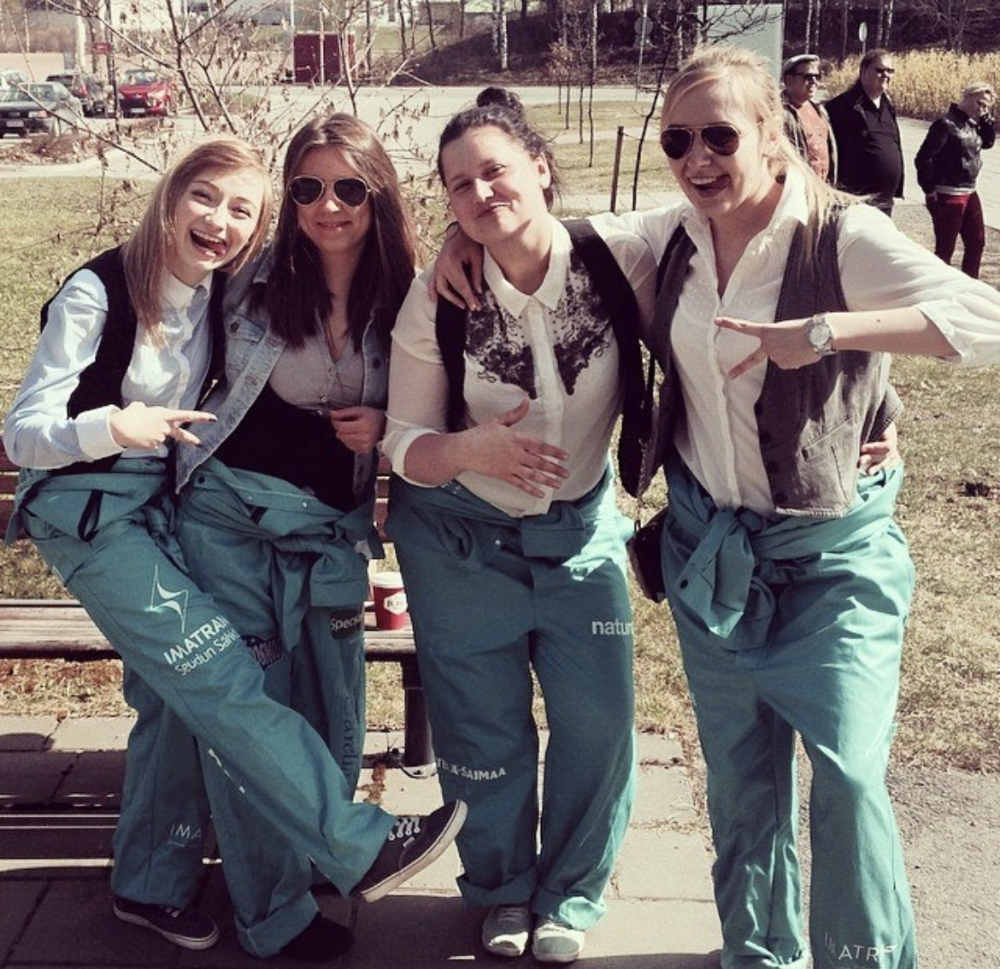

Studies
I have a Master degree from Russian Saint Petersburg Government University of Economics with a specialization in Financial Management. During the studies I went for a study exchange to Finland. That was the time I realized I didn't wanna live in Russia. I applied for studies in Finland and got accepted. I finished degree promptly in Russia moved to Finland for good.
I have a degree from LUB University of Applied Sciences. I hold bachelor degree in Hotel and Restaurant Management. I have graduated in 2012.
Currently I am a fresh student at Haaaga Helia at Business Information Technology. I really enjoy studying coding. I hope I will succeed in few programing languages.
Work Experience
Always during studies and between I tried to get an experience from different areas. I have worked so far as Seller at food store (2013-2016;2020-), Liquorice packaging department (2019-2020); Bartender in Golf Club (2012-2013), Hotel receptionist (2010-2011) and Hotel excursions /taxi service department (2011).